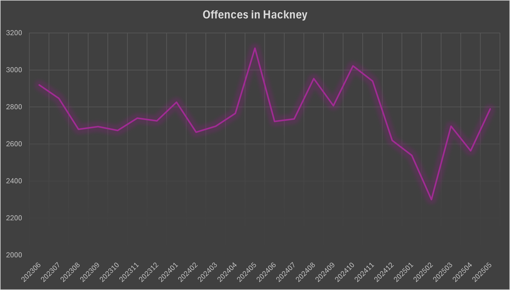

Crime Types and Rates
- Violence Without Injury – Average: ~450/month; Peak: 549 (June 2023).
- Theft from the Person – Average: ~550/month; Peak: 720 (April 2024).
- Violence With Injury – Average: ~230/month; Peak: 329 (June 2023).
- Other Theft – Average: ~450/month; Peak: 654 (June 2023).
- Bicycle Theft – Average: ~110/month; Peak: 173 (October 2024).
Key Trends:
- Violent incidents cluster around Dalston and Shoreditch nightlife.
- Bicycle theft is prevalent near parks and stations.
Safety Advice
- üîí Lock bikes with two sturdy locks near Hackney Central.
- üåô Avoid walking alone in poorly lit areas like Mare Street after midnight.
- üéßüö´ Refrain from wearing headphones while walking at night to stay alert.
- üö∂‚Äç‚ôÄÔ∏èüí° Use well-lit and busy routes when moving between university and accommodation.
- ‚ö†Ô∏èüíª Stay sceptical of online rental offers that ask for deposits upfront without viewing.
Crime Statistics Chart

Offences in Hackney